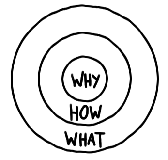

Who is Esteban Martinez?
Boot camp buddy
Peter B. Street
Github
Career Mentor
Joseph Farfel, Google Engineer
LinkedIn
Prework/Pre Bootcamp successes
- Setting up my CNM and bootcamp accounts
- Downloading and setting up my tooset chain (PHPStorm, Git and GitHub
- Built a GitHub Account
- Watched all screencasts and read all chapters required
- Codeacademy tutorials: HTML, CSS and some Javascript
- Lynda.com tutorials including Intro to HTML5 and Intro to CSS3
- Mozilla Developer Network readings, mainly HTML and CSS
>
Goals I can measure| Week 1
Toolset
With the boot camp starting this week, getting comfortable with my toolset is my main focus:
- PHPStorm--Writing code every night in order to get used to the structure and how PHPStorm auto completes tags, how to
start and save projects to certain directories and link different pages(CSS)
- Git/GitHub--Getting comfortable with committing/pushing to GitHub, even with the smallest bits of code
Professional Development Needs
Not only do I have hard skill goals, but also the post boot camp intentions.
- LinkedIn Profile--As part of my Professional Development, I'd like to set up my LinkedIn profile in order to start networking
- Resume building--I have a very weak resume at the moment. I'd like to build on that is not only complete but attractive .
Homework Activities
My Learning Style
- Visual/Auditory (50%)
I am definitely a very visual learner. Watching people/experts explain (YouTube tutorials, lectures with examples)
- References/Textbook (20%)
Having a textbook as a reference to go back to from a proven author is my second weapon in the arsenal.
- Learn by Doing (30%)
By getting my hands dirty I can make mistakes, learn from them, get comfortable with my work flow
Qualitative Goals
- I want to be able to listen to my instructors and cohort, digest their advice and suggestions in order to fully grasp the fundamentals on data design.
- My study skills have to improve, and also the different studying routes available to me. This first week I've been discovering new avenues of help, and using them to my advantage.
Quantitative Goals
- I want to increase my study time. We are currently in the Honeymoon Stage, and I would like to increase the time I spend outside of class solidifying what I learned that day.
Golden Circle

The Golden Circle provides the opportunity to map out WHY you want to do something, HOW you plan on doing it, and WHAT that thing is.
It is important to start from the middle and work your way out, making the WHY, your root to your goal, the most important part
- WHY: I want to be a part of a community of smart, motivated people that I can build useful and fun products in the sports world, while practicing my new skill. I love sports and would like to make a living working in that realm
- HOW: By building a good core of web development skills and marketing them into the sports community
- WHAT: Web development tools for Fantasy Football players
Weekly Reflections
Since my congratulatory e-mail, I've been focusing my free time to learning the basics of HTML and CSS
and working my way throught the prework.
Since we are only one day in, my reflections so far revolve around the environment I've come to find so far.
The "workplace" is comfortable, and I'm excited to be amongst other students striving to make a change in their
professional lives. I definitely feel part of a community.
Elevator Pitch
Hi my name is Esteban and I am a NM bred Full Stack Web Developer who is in love with sports. I've built up a strong set of
coding skills so I can help sports teams communicate with their fans easily with a great website and even an app! I'm as
competitive with my professional work as I was with my sports career, and really want to work with like minded people.
Do you have any upcoming community or company events in the near future where I can network with sports minded people?